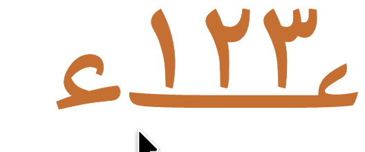
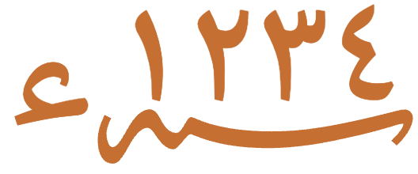

This page brings together basic information about the Makasar script and its use for the Makassarese language. It aims to provide a brief, descriptive summary of the modern, printed orthography and typographic features, and to advise how to write Makassarese using Unicode.
Makasar, locally referred to as ‘bird letters’ ( 𑻱𑻴𑻠𑻳𑻭𑻳𑻪𑻢𑻪𑻢 ), is an Indonesian abugida used in South Sulawesi to write the Makassarese language. It was later replaced by Buginese. Makasar script was used in manuscripts dealing with history and genealogies, the most widely written and important writing topics by the Buginese and Makassar people. This genre can be divided into several sub-types: genealogy or daily registers, and historical or chronicle records.
Makassarese is an endangered indigenous language of Indonesia. The language is used as a first language by all adults in the ethnic community, but not all young people. It is taught as a subject of instruction in some schools. It is spoken by over a million people. The language has some spell checking or localized tools or machine translation as well.eth
The Makasar script is an abugida, ie. each consonant contains an inherent vowel sound. It is also a ‘defective’ script, meaning that syllable codas are not written. See the table to the right for a brief overview of features for the Makasar orthography.
Text runs left-to-right in horizontal lines. There is no case distinction. Words are not separated by spaces, but short phrases are separated by 𑻷. Lines are wrapped at syllable boundaries.
Makasar represents native consonant sounds using 17 basic letters. Syllable codas are never written.
Repeated consonants or syllables can be abbreviated by either adding two vowel signs to a single consonant, or by using 𑻲 for the second syllable.
Since syllable codas are never written in the Makasar orthography, there are no consonant clusters or word-final codas in written text, and therefore no need to mark vowel absence. Makasar has no vowel-killer character, nor any conjuncts.
Plain post-consonant vowels are written using 4 combining vowel signs. There are no composite vowel signs. Diphthongs are commonly written using a vowel sign followed by an independent vowel. There is one pre-base vowel sign, but no circumgraphs.
Standalone vowels are written using 𑻱 as a vowel carrier, followed by regular vowel signs.
Sylheti uses ASCII and Arabic digits, but has no native digits. Punctuation marks are few, and involve two native symbols. The end of a text is indicated using a spelled out Arabic word in the Arabic script.
Notable features
lines are wrapped at syllable boundaries
in this a ‘defective’ script, syllable codas are not written
syllables that repeat consonants can be abbreviated in one of two ways
there are no independent vowel letters
ASCII and Arabic digits are used, but no native digits
the end of a text is indicated using a spelled out Arabic word in the Arabic script.
Character index
Letters
Show
Basic consonants
𑻠,𑻡,𑻢,𑻣,𑻤,𑻥,𑻦,𑻧,𑻨,𑻩,𑻪,𑻫,𑻬,𑻭,𑻮,𑻯,𑻰
Vowels
𑻱
Other
𑻲
Special
ت,م,ء
Combining marks
Show
Vowels
𑻳,𑻴,𑻵,𑻶
Other
,,ّ
Numbers
Show٠,١,٢,٣,٤,٥,٦,٧,٨,٩
ASCII
0,1,2,3,4,5,6,7,8,9
Punctuation
Show𑻷,𑻸
Items to show in lists
Phonology
The following represents the repertoire of the Makassarese language.
Click on the sounds to reveal locations in this document where they are mentioned.
Phones in a lighter colour are non-native or allophones. Source Wikipedia.
The inherent vowel for Makasar is pronounced a. So ba is written by simply using the consonant letter.
eg.
𑻤𑻦𑻭
𑻤,𑻦,𑻭
The inherent vowel is usually pronounced at the end of a word.
Since Makasar doesn't write syllable codas, the orthography needs no way to indicate a consonant that is not followed by a vowel sound. See novowel.
Post-consonant vowels
Post-consonant vowels besides the inherent vowel are written using 4 combining vowel signs. There are no composite vowel signs, but more than one vowel sign can be attached to a single base consonant (see repeatC).
Diphthongs are written using a vowel sign followed by a standalone vowel.
One vowel sign is a spacing mark, meaning that it consumes horizontal space when added to a base consonant.
Makasar uses the following vowel signs for vowels. They are all dedicated combining marks.
𑻳,𑻴,𑻵,𑻶
The sounds e and o change to ɛ and ɔ when word-final, or when the following syllable is pronounced with one of the latter sounds.wl
eg.
𑻠𑻮𑻵
𑻤𑻶𑻧𑻶
Pre-base vowel sign
𑻠𑻵
ke
The vowel sign 𑻵 appears to the left of the base consonant letter or cluster.
eg.
𑻦𑻵𑻧𑻶
This is a combining mark that is always typed and stored after the base consonant(s), ie. the codepoints follow the order in which the items are pronounced. The rendering process places the glyph before the base consonant without changing the code points. The following shows the sequence of code points that make up the word just above.
𑻦,𑻵,𑻧,𑻶
Nasalisation
Makassarese vowels are commonly nasalised when they occur in the same syllable as a nasal consonant. This also affects following standalone vowels. However, the orthography has nothing to indicate nasalisation.
eg.
𑻤𑻮
𑻨𑻳𑻱
Standalone vowels
𑻱
a
𑻱𑻳
i
Makasar has one independent vowel letter, 𑻱, which is used alone for standalone vowels pronounced a.
eg.
𑻱𑻦𑻴
𑻠𑻰𑻳𑻱
Other standalone vowels use 𑻱 as a vowel sign carrier. The vowel to be pronounced is indicated by attaching a vowel sign.
eg.
𑻱𑻴𑻮𑻴
𑻤𑻴𑻮𑻱𑻵
The following list shows how to write each of the standalone vowels.
𑻱𑻳,𑻱𑻴,𑻱𑻵,𑻱𑻶,𑻱
Vowel sounds to characters
This section maps Makassarese vowel sounds to common graphemes in the Makasar orthography.
Diphthongs are written using the pattern consonant + vowel_sign + vowel_carrier + vowel_sign.
Sounds listed as 'infrequent' are allophones, or sounds used for foreign words, etc. Light coloured characters occur infrequently.
Plain vowels
i
dependant𑻳
standalone𑻱𑻳
u
dependant𑻴
standalone𑻱𑻴
e
dependant𑻵
standalone𑻱𑻳
o
dependant𑻶
standalone𑻱𑻴
ɛ
dependant𑻵An allophone of e, found in word-final position or in a syllable followed by ɛ.
ɔ
dependant𑻶An allophone of o, found in word-final position or in a syllable followed by ɔ.
a
inherited voweleg. 𑻠𑻮𑻰
standalone𑻱𑻴
Vowel absence
eg.
𑻠𑻶𑻠𑻶
𑻣𑻫𑻴
Consonants
Consonant summary table
This table only summarises basic consonant to character assignments. Click on the phonetic transcriptions for more detail.
This table shows phonemes only. For allophones, click on the phonemes.
Basic consonant sounds in Makassarese are written using the following letters
Click on each letter for usage notes, alternative pronunciations, and for examples of usage.
𑻣,𑻤,𑻦,𑻧,𑻩,𑻪,𑻠,𑻡,𑻰,𑻥,𑻨,𑻫,𑻢,𑻯,𑻭,𑻮,𑻬
Consonants 𑻤 and 𑻧 have allophones ɓ and ɗ, respectively, when used word-initially or after ʔ.
eg.
𑻤𑻤𑻳
The consonants p,t, and k have commonly occurring allophones pʰ, tʰ, and kʰ.
eg.
𑻣𑻵𑻣𑻵
Repeated consonants
When a sequence of two syllables has the same onset, Makasar allows for two alternative ways of writing that sequence.
If the syllables are the same, it is possible to write the onset once and append two vowels to it.
eg.
𑻧𑻴,𑻧𑻴,𑻧𑻴𑻴
𑻧𑻶,𑻧𑻶,𑻧𑻶𑻶
When the syllables have inherent vowels, this method doesn't work. Instead, Makasar text allows the use of a special symbol 𑻲 to mark the repetition.
eg.
𑻧,𑻧,𑻧𑻲
However, this approach can be extended to a sequence of two syllables with different vowels by adding a vowel sign to the angka.
eg.
𑻧,𑻧𑻴,𑻧𑻲𑻴
Observation: Examples of these two approaches can be seen with i and u vowel signs, but it is not clear from the sources whether this also works for e and o vowels.
Onsets
Makassarese doesn't have consonant clusters in onsets.
Codas
Makasar is a ‘defective’ script, meaning that codas are not written. This can give rise to ambiguities in text, eg. compare the following
cf.
𑻭𑻭 ˈra.rablood
𑻭𑻭
Consonant length
The Makassarese language does sometimes have the same sound for a syllable coda and following onset. Because codas are not written, these instances are not marked in the writing.
eg.
𑻤𑻵𑻮
𑻩𑻩
Consonant sounds to characters
This section maps Makassarese consonant sounds to common graphemes in the Makasar orthography.
All of these items are for syllable onsets. No syllable codas are written.
Sounds listed as 'infrequent' are allophones, or sounds used for foreign words, etc. Light coloured characters occur infrequently.
p
𑻣
pʰ
𑻣A frequent allophone of p.
b
𑻤
ɓ
𑻤Allophone of b when word-initial or after ʔ.
t
𑻦
tʰ
𑻦A frequent allophone of t.
d
𑻧
ɗ
𑻧Allophone of d when word-initial or after ʔ.
c
𑻩
ɟ
𑻪
k
𑻠
kʰ
𑻠A frequent allophone of k.
ɡ
𑻡
s
𑻰
m
𑻥
n
𑻨
ɲ
𑻫
ŋ
𑻢
w
𑻯
r
𑻭
l
𑻮
j
𑻬
Encoding choices
This section offers advice about characters or character sequences to avoid, and what to use instead. It takes into account the relevance of Unicode Normalisation Form D (NFD) and Unicode Normalisation Form C (NFC). It also takes into account Unicode's Do Not Emit guidelines.
Although usage is recommended here, content authors may well be unaware of such recommendations. Therefore, applications should look out for the non-recommended approach and treat it the same as the recommended approach wherever possible.
Makasar has no normalisation forms, confusables, or other ambiguous shapes.
Codepoint sequences
Combining marks always follow the based character, even for vowel signs displayed to the left of the base.
Numbers
Digits
Makasar does not have a set of native digits. Sources show the use of two distinct sets of digits, the first resembling ASCII digits, and the second resembling arabic-indic digits. Both sets may be used by a source, with the arabic-indic digits being used for example for hijri dates, whereas ASCII digits would be used for gregorian dates.
0,1,2,3,4,5,6,7,8,9٠,١,٢,٣,٤,٥,٦,٧,٨,٩
Digits may also be decorated using or .
eg.

,١,٢,٣,ء

,١,٢,٣,٤,ء
Text direction
Makasar text runs left to right in horizontal lines.
Makasar letters don't interact, so no special shaping is needed. However, combining marks need to be positioned appropriately relative to their base letters. The following lists a few such cases:
Vowel signs need to be positioned relative to their base letters, including the pre-base position of the vowel sign for e (see prebase).
When consonant onsets are repeated, multiple vowel signs may need to be arranged alongside each other (see repeatC).
Typographic units
Word boundaries
Words are not typically separated by spaces. The punctuation mark 𑻷 is used at a sub-sentence level, but separates short phrases, rather than words.
Words are not hyphenated.
Graphemes
tbd
Punctuation & inline features
Phrase & section boundaries
phrase
𑻷
section
𑻸
end of text
تمّت
Makasar uses very little punctuation. The Unicode block contains two native punctuation marks.
In contexts related to Arabic culture, Makasar uses characters from the Unicode Arabic block. This includes the end of text marker shown above, and a couple of number indicators (see digits). The end of text marker is pronounced tammat, meaning ‘it is complete’), and it typically highly stylised. There is no atomic symbol for the end-of-text marker, and the Unicode Standard indicates that it should be spelled out letter by letter (but the shadda is optional).
Line & paragraph layout
Line breaking & hyphenation
Lines are generally broken between syllables, rather than words.
Breaking lines within a word
There are no mechanisms to indicate mid-word breaks in a line (‘hyphenation’).